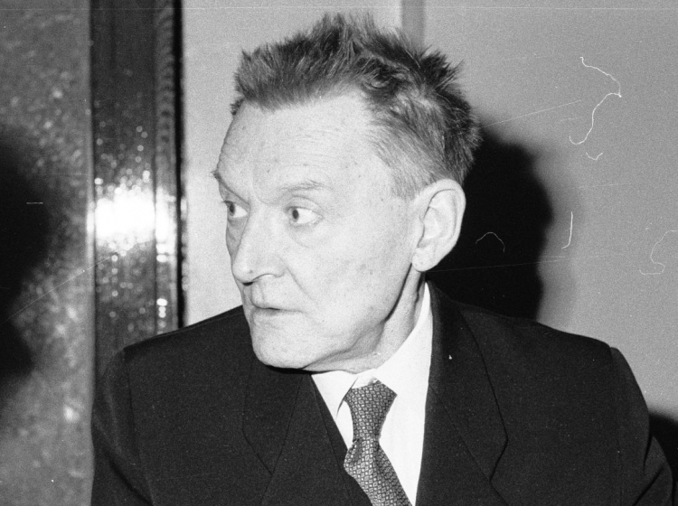
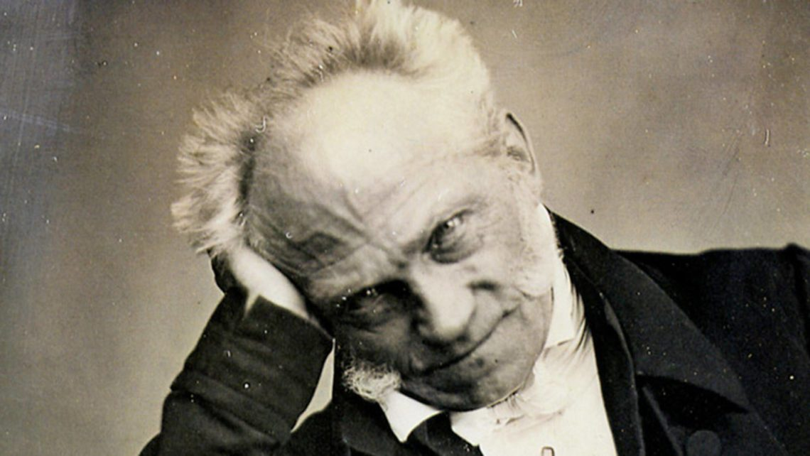
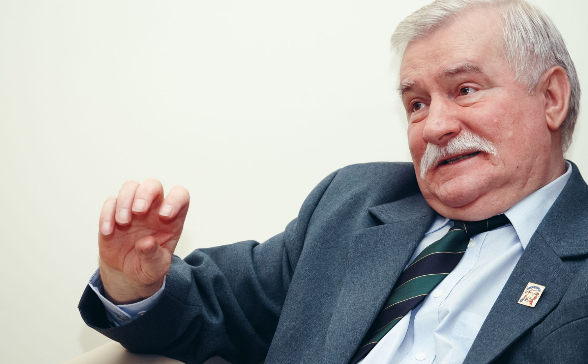
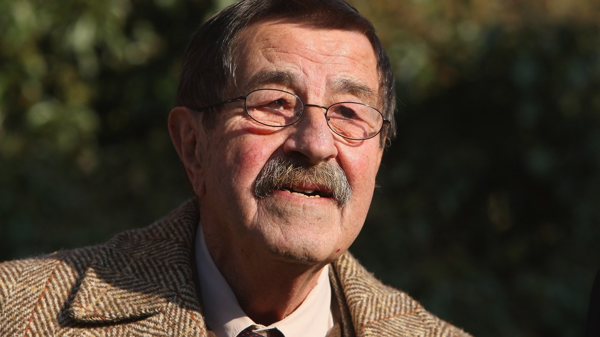

Właściwie - Leszek Mieczysław Zygmunt Buntkowski, ps. „Stanica” - ur. 24 stycznia 1920 w Toruniu, zm. 24 lutego 1984 w Gdańsku – polski i Kaszubski pisarz, dziennikarz, tłumacz, działacz polityczny, kulturalny i społeczny, podporucznik piechoty rezerwy Polskich Sił Zbrojnych. Służył w kilku formacjach: z Brygadą Strzelców Podhalańskich walczył pod Narvikiem, w Wielkiej Brytanii służył w Marynarce Wojennej i w Oddziałach Cichociemnych jako komandos. Za waleczną postawę został odznaczony w 1940 roku przez gen. Sikorskiego Orderem Virtuti Militari. Od połowy lat sześćdziesiątych konsekwentnie pisał lub podpisywał zbiorowe i indywidualne protesty przeciwko łamaniu swobód obywatelskich, wolności słowa, fałszowaniu historii.
Arthur Schopenhauer – urodzony 22 lutego 1788 roku w Gdańsku niemiecki filozof. Przedstawiciel pesymizmu. Był synem kupca i literatki, z którymi wyemigrował do Hamburga po zajęcia Gdańska przez Prusy w 1793. Studiował w Getyndze, Berlinie i Jenie. Wykładał na Uniwersytecie Berlińskim, jednak wskutek bojkotu jego wykładów przez zwolenników Hegla wyjechał do Frankfurtu, gdzie wiódł samotnicze życie. Wielki wpływ na jego filozofię wywarły pisma Kanta oraz przemyślenia filozofii indyjskiej, którą poznał podczas podróży na Wschód. W 1819 roku wydał swoje najważniejsze dzieło, Świat jako wola i przedstawienie, zaczynające się od słów „świat jest moim wyobrażeniem”, które streszczają główne założenia jego przemyśleń. Uważał, że człowiek poznaje świat subiektywnie. Schopenhauer miał olbrzymi wpływ na dalsze rozważania filozoficzne, zainspirował m.in. Nietzschego. Zmarł 21 września 1860 roku we Frankfurcie.
Urodził się 23 września 1943 roku w Popowie. Syn Bolesława Wałęsy i Feliksy Kamińśkiej. Działacz związkowy, przywódca opozycji demokratycznej w czasach PRL. Z wykształcenia elektryk, skończył Zasadniczą Szkołę Zawodową w Lipnie. W latach 60 pracował w Zakładach ZREMB, później podjął pracę w Stoczni Gdańskiej. Był jednym z członków Komitetu Strajkowego Stoczni, za co został skazany na rok pozbawienia wolności i zwolnienie ze stoczni. Jest on jednym z współzałożycieli Wolnych Związków Zawodowych Wybrzeża. Na początku lat 80tych został wybrany przewodniczącym Solidarności. Internowany w 1981 roku, przebywał początkowo w rządowym ośrodku w Chylicach, później zaś w Arłamowie. Zwolniony w listopadzie 1982 roku. W 1983 roku został laureatem Pokojowej Nagrody Nobla, która w jego imieniu odebrała jego żona Danuta. W 1989 roku uczestniczył w obradach Okrągłego Stołu Wałęsa został prezydentem Polski w 1990 roku. Trzy lata później był założycielem Bezpartyjnego Bloku Wspierania Reform, a w 1995 przegrał wybory prezydenckie z Aleksandrem Kwaśniewskim. W roku 2000, ponownie kandydował na urząd prezydencki, po raz kolejny bez rezultatów(1,01% poparcia). Wspierał on ukraińską „pomarańczową rewolucję”. Przez niektóre kręgi polityczne podejrzewany o współpracę z SB, jako tajny współpracownik o pseudonimie „Bolek”. W 2008 roku przeszedł w USA poważną operację serca.
Günter Grass – urodził się w 1927 roku w Wolnym Mieście Gdańsku. Jeden z najwybitniejszych współczesnych niemieckich pisarzy, laureat nagrody Nobla w roku 1999 w dziedzinie literatury. Jego ojcem był Niemiec a matka pochodziła z Kaszub. W czasie II wojny światowej zgłosił się do niemieckiej marynarki wojennej, a w roku 1944 roku został wcielony do Waffen-SS. Po zakończeniu wojny miejscem jego zamieszkania stał się Berlin Zachodni. Pracował jako robotnik rolny, górnik, muzyk jazzowy. Studiował w Akademii Sztuk Pięknych w Düsseldorfie. Rok 1958 okazał się przełomowy, powstał utwór „Blaszany bębenek” – pozytywnie oceniony przez krytyków, przetłumaczony na wiele języków, doczekał się nawet ekranizacji. Kolejne jego utwory: „Kot i mysz” oraz „Psie lata” wraz z „Blaszanym bębenkiem” tworzą tzw. trylogię gdańską. Za swoją twórczość wielokrotnie nagradzany, jest doktorem honoris causa Uniwersytetu Gdańskiego.
| Imię | Nazwisko | Zajęcie |
|---|---|---|
| Lech | Bądkowski | Dziennikarz |
| Arthur | Schopenhauer | Filozof |
| Lech | Wałęsa | Polityk |
| Günther | Grass | Pisarz |